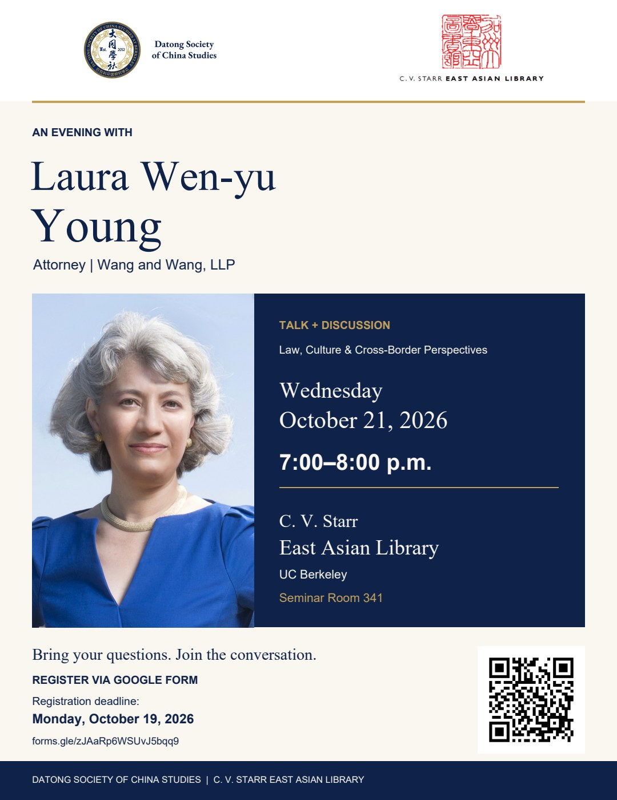
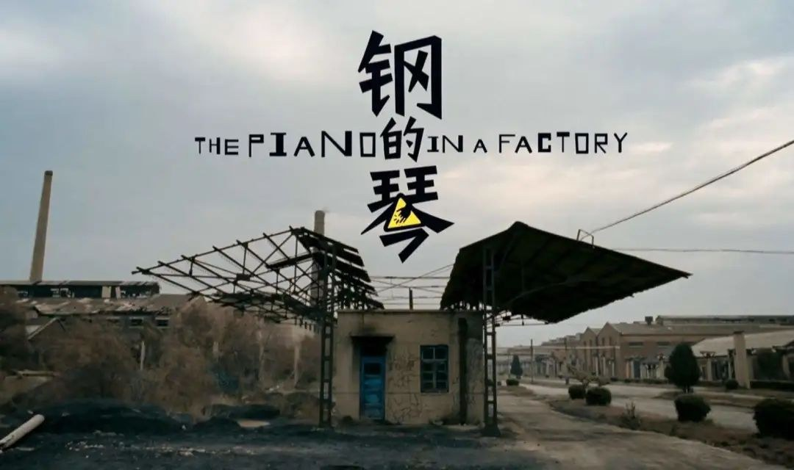

Public Events
Lectures, screenings, exhibitions, and public exchanges on China and East Asia.
Browse programs by year or type. Open a record for details and archive images.
10 events
No events match these filters.
2026

A Conversation with Laura Wen-yu Young
Datong Society · East Asian Library
Datong Society and the East Asian Library hosted Laura Wen-yu Young of Wang and Wang, LLP for an evening of remarks and open discussion.
Read more & view images
Archive images


KŪKAI 空海 — Screening & Discussion
Datong Society · East Asian Library
A documentary on Kūkai’s journey from Japan to Tang China, followed by an online conversation with director Yue Ye. Co-hosted with C. V. Starr East Asian Library and Deep Value. Classical Chinese narration with English subtitles; film runtime: 97 minutes.
Read more & view images
Archive images


2024

Geling Yan: Milati
Guest: Geling Yan
Writer Geling Yan joined Datong for a conversation about Milati, followed by audience questions and a book signing.
Read more & view images
Set against the cultural and intellectual changes of the 1980s, Milati follows a young woman’s passage from performing in a military arts troupe to writing and thinking independently. The conversation introduced the novel and Yan’s experience of writing and publishing it overseas.
The afternoon brought together an author presentation, audience Q&A, and a book signing. The event was conducted in Mandarin and organized by Datong Society.
Archive images


2023

The Piano in a Factory: Screening & Discussion
Guests: Kevin O’Brien and Lillian Xiying Lin
A screening of Zhang Meng’s film opened a conversation about industrial change, memory, and the lives of workers in Northeast China.
Read more & view images
Set in a Northeast Chinese industrial city during the layoffs of the 1990s, the film follows a former steelworker who tries to build a piano for his daughter. Its story of family and friendship also offers a view of the changing place of industrial labor in everyday life.
The post-screening conversation featured Berkeley political scientist Kevin O’Brien and history PhD student Lillian Xiying Lin. Both guests brought connections to Northeast China to the discussion. The film was shown in Chinese with English subtitles, followed by discussion in English.

The WeChat Lawsuit: A Conversation with Keliang Zhu
Guest: Keliang Zhu, attorney
Attorney Keliang Zhu discussed the origins, course, and legal strategy of the challenge to the 2020 WeChat ban, and its implications for Chinese American civic participation.
Read more & view images
Drawing on his involvement in the litigation, Zhu introduced how the case was organized and pursued. The lecture connected the history of the dispute with broader questions about legal advocacy and the ways a community can use the courts to defend its interests.
Held in Mandarin as part of Datong’s Chinese-language lecture series, the event brought students and members of the wider community together for a lecture and questions.
Archive images


Still Life: Screening with Peter Hessler & Andrew F. Jones
Peter Hessler (online) · Andrew F. Jones (in person)
Jia Zhangke’s film brought a Bay Area audience together for a conversation with writer Peter Hessler and Berkeley scholar Andrew F. Jones.
Read more & view images
Set amid the transformations of the Three Gorges region, Still Life follows people looking for family members as familiar landscapes are dismantled and rebuilt. Datong’s screening created space to consider these changes through film and conversation.
Peter Hessler joined the post-screening discussion over Zoom, while Andrew F. Jones attended in person. In a thank-you email the following morning, organizer Marshall Li recorded an audience of more than 160 people from across the Bay Area and the team’s wish to send Hessler a signed thank-you card.
The society’s earlier archive also records a screening of this film in 2015.
Archive images


2021

The Chinese Mayor: Screening & Panel
Jean Quan · Thomas Gold · Junius Brown (moderator)
A documentary screening and panel on urban redevelopment, local governance, and the relationship between citizens and the state.
Read more & view images
Zhou Hao’s documentary follows urban redevelopment in Datong, Shanxi, and the tensions surrounding the transformation of the city. Datong Society paired the film with perspectives from public service and research on Chinese politics and society.
The event program lists former Oakland mayor Jean Quan and Berkeley sociologist Thomas Gold as panelists, with Junius Brown moderating and Luxi Peng hosting. The screening was followed by a panel and audience Q&A. The original program acknowledges support from Andrew F. Jones, Annie Campbell Washington, and Jianye He.
The society’s earlier archive also records a screening of this film in 2015.
Archive images

2019

Modern Chinese Embroidery on Pillow Covers
Co-organized with the Sookmyung Women’s University Museum, this exhibition presented modern Chinese embroidered pillow covers to an overseas audience for the first time. Datong organized the exhibition checklist, volunteer schedules, loan agreements, and lecture posters; it was the society’s largest external program.
Read more & view images
Archive images


2017

Stanford Hoover Institution — Archive Visit
A visit to Stanford’s Hoover Institution Archives to explore original materials from the Republican era and modern China.
Read more & view images
Archive images


2016

Let’s Talk About Social Science — An Interdisciplinary Salon
Fifteen students gathered for ninety minutes of readings and questions on what makes good social science, helping establish Datong’s tradition of small discussion salons.
Read more & view images
Archive images


Explore our community photographs and DeCal course archive.